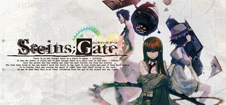
命运石之门
STEINS;GATE
R18 Lv.1：全年龄；含成熟题材
科幻悬疑 / 时间旅行 / 伏笔回收
门槛：中｜篇幅：30–45h
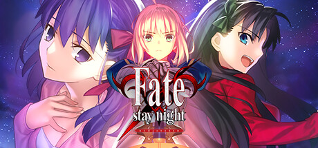
Fate/stay night REMASTERED
Fate/stay night REMASTERED
R18 Lv.2：Steam/NS 为全年龄；原始 PC 版 R18
传奇活剧 / 圣杯战争 / 多路线
门槛：中高｜篇幅：50–80h
魔法使之夜
WITCH ON THE HOLY NIGHT / 魔法使いの夜
R18 Lv.0：全年龄
现代魔术 / 视觉演出 / 单线
门槛：中｜篇幅：25–35h
CLANNAD
CLANNAD
R18 Lv.0：全年龄
校园 / 家庭 / 泣系
门槛：中｜篇幅：60–90h
Kanon
Kanon
R18 Lv.2：Steam 高清版为全年龄/轻度成熟内容；早期 PC 版含成人版本
冬季校园 / 奇迹 / 泣系
门槛：中｜篇幅：25–40h
AIR
AIR
R18 Lv.2：Steam 版全年龄；原始 PC 版 R18
夏日 / 轮回 / 家族诅咒 / 泣系
门槛：中｜篇幅：20–35h
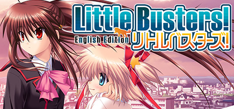
Little Busters!
Little Busters! English Edition
R18 Lv.2：English Edition 全年龄；Ecstasy 版 R18
校园群像 / 友情 / 泣系 / 小游戏
门槛：中高｜篇幅：60–90h
Rewrite+
Rewrite+
R18 Lv.1：全年龄；轻度成熟内容
校园 / 超自然 / 世界危机 / 多路线
门槛：中高｜篇幅：50–80h
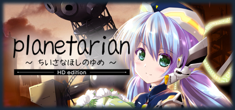
星之梦
planetarian HD
R18 Lv.0：全年龄
短篇 / 末世 / 机器人 / 泣系
门槛：低｜篇幅：4–6h
Ever17 -the out of infinity-
Ever17 -the out of infinity-
R18 Lv.0：全年龄
密室悬疑 / 科幻诡计 / 多视角
门槛：中｜篇幅：30–45h
Muv-Luv Alternative
Muv-Luv Alternative
R18 Lv.2：Steam 版全年龄/裁剪；早期 PC 版有成人评级或成人内容差异
机甲 / 战争 / 平行世界 / 长篇
门槛：高｜篇幅：70–100h+
Baldr Sky
Baldr Sky
R18 Lv.2：Steam 版裁剪/暗示；原版 R18
赛博朋克 / 机甲动作 / 记忆悬疑
门槛：中高｜篇幅：60–90h
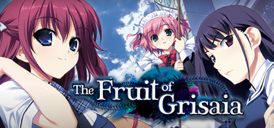
灰色的果实
The Fruit of Grisaia
R18 Lv.2：Steam 版与成人版存在差异；原版/成人版 R18
学园孤岛 / 黑暗过去 / 角色路线
门槛：中｜篇幅：50–80h
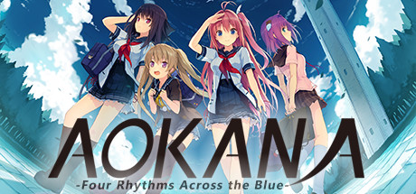
苍之彼方的四重奏
Aokana - Four Rhythms Across the Blue
R18 Lv.2：Steam 版可通过 18+ DLC/补丁恢复原版成人内容
青春竞技 / 飞行运动 / 恋爱
门槛：低中｜篇幅：30–50h
千恋＊万花
Senren＊Banka
R18 Lv.2：Steam 版全年龄/裁剪；NekoNyan 等渠道有 18+ Steam patch
废萌 / 和风乡镇 / 恋爱喜剧
门槛：低｜篇幅：25–45h
Riddle Joker
Riddle Joker
R18 Lv.2：Steam 版可装官方 18+ patch
超能力校园 / 废萌 / 恋爱喜剧
门槛：低｜篇幅：25–45h
魔女的夜宴
Sabbat of the Witch / サノバウィッチ
R18 Lv.2：Steam 版有 Adult Only Patch / DLC
校园废萌 / 魔女 / 恋爱喜剧
门槛：低｜篇幅：25–45h
星光咖啡馆与死神之蝶
Café Stella and the Reaper’s Butterflies
R18 Lv.2：Steam 版全年龄/裁剪；NekoNyan 有 Café Stella 18+ patch 条目
咖啡馆 / 死神奇幻 / 废萌
门槛：低｜篇幅：25–45h
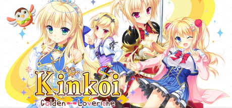
金色ラブリッチェ
Kinkoi: Golden Loveriche
R18 Lv.2：Steam 版全年龄/裁剪；NekoNyan 有 18+ patch 条目
校园恋爱 / 大小姐 / 废萌泣系
门槛：低中｜篇幅：30–50h
Making＊Lovers
Making*Lovers
R18 Lv.2：Steam 版含轻度成熟内容；原版/非 Steam 成人内容需按商店确认
恋爱喜剧 / 成年恋爱 / 约会
门槛：低｜篇幅：20–35h
フレラバ
Fureraba ~Friend to Lover~
R18 Lv.2：Steam 版与原版存在成人内容差异可能
恋爱喜剧 / 校园 / 交往模拟
门槛：低｜篇幅：20–35h
9-nine-
9-nine-: Episode 1 / 系列起点
R18 Lv.2：Steam/原版存在成人内容差异；Steam 有性内容标签
短篇连作 / 超能力 / 悬疑恋爱
门槛：中｜篇幅：单章 8–12h；全系列 35–50h
ATRI -我挚爱的时光-
ATRI -My Dear Moments-
R18 Lv.0：全年龄
近未来 / 机器人少女 / 夏日 / 泣系
门槛：低｜篇幅：8–12h
交响乐之雨
Symphonic Rain
R18 Lv.0：全年龄
音乐学院 / 雨城 / 恋爱 / 隐痛
门槛：低中｜篇幅：20–30h
ISLAND
ISLAND
R18 Lv.1：全年龄/轻度成熟标签
孤岛 / 轮回 / 恋爱悬疑
门槛：中｜篇幅：25–40h
同级生 Remake
Dōkyūsei: Bangin’ Summer
R18 Lv.3：Steam 版可通过官方成人 DLC/补丁扩展；原作成人向
日程管理 / 恋爱模拟 / 经典重制
门槛：中｜篇幅：15–30h
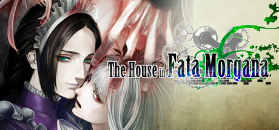
海市蜃楼之馆
The House in Fata Morgana
R18 Lv.1：无性 R18；强创伤/暴力主题
哥特 / 轮回悲剧 / 悬疑
门槛：中｜篇幅：30–40h
美好的每一天 ～不连续的存在～
Wonderful Everyday Down the Rabbit-Hole
R18 Lv.4：Steam 基础版内容受限；JAST/补丁后含 R18 与强烈内容
电波 / 哲学 / 校园崩坏 / 猎奇
门槛：高｜篇幅：30–50h
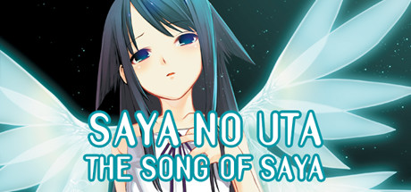
沙耶之歌
Saya no Uta ~ The Song of Saya
R18 Lv.4：Steam 编辑版；JAST 未删版/补丁含 R18 与猎奇内容
克苏鲁式恋爱 / 猎奇 / 心理恐怖
门槛：高｜篇幅：5–8h
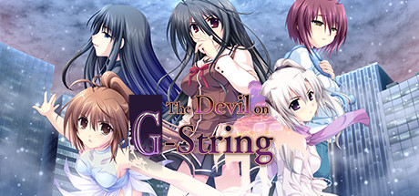
G弦上的魔王
G-senjou no Maou - The Devil on G-String
R18 Lv.2：Steam 版含成熟内容提示；原版 R18
犯罪悬疑 / 智斗 / 恋爱
门槛：中｜篇幅：25–40h
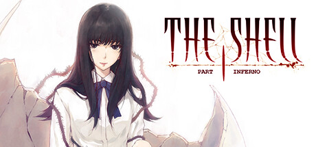
殻之少女 / The Shell Part I
The Shell Part I: Inferno
R18 Lv.4：Steam 版裁剪；Johren/补丁线有 18+ 内容
昭和侦探 / 连环杀人 / 心理恐怖
门槛：高｜篇幅：25–40h
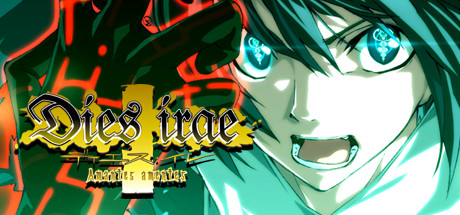
Dies irae
Dies irae ~Amantes amentes~
R18 Lv.2：Amantes amentes 为全年龄/成熟主题；Acta est Fabula 等旧版本 R18
厨二战斗 / 神秘学 / 二战余波
门槛：中高｜篇幅：40–70h
海猫鸣泣之时
Umineko When They Cry - Question Arcs
R18 Lv.1：无性 R18；强暴力/残酷描写
孤岛推理 / 魔女辩论 / 元叙事
门槛：高｜篇幅：100h+
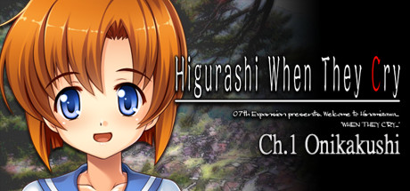
寒蝉鸣泣之时
Higurashi When They Cry Hou - Ch.1 Onikakushi
R18 Lv.1：无性 R18；强暴力/心理恐怖
乡村恐怖 / 轮回谜团 / 悬疑
门槛：中高｜篇幅：全篇 80h+
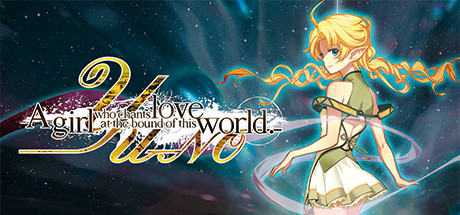
YU-NO 在这世界尽头咏唱爱的少女
YU-NO: A girl who chants love at the bound of this world
R18 Lv.2：现代重制版为全年龄/成熟内容；原始版本 R18
并行世界 / 时间跳跃 / 探索解谜
门槛：中｜篇幅：40h+
白昼梦的青写真
Cyanotype Daydream -The Girl Who Dreamed the World-
R18 Lv.2：Steam 版重构/成熟内容；日文原版为成人向口径
多段爱情 / 科幻框架 / 文学感
门槛：中高｜篇幅：35–50h
战国兰斯
Sengoku Rance
R18 Lv.3：R18 主体；Steam 页面也标记 Sexual Content/Hentai
成人向 / 战略 RPG / 战国征服
门槛：中高｜篇幅：40–80h
在这苍穹展翅
If My Heart Had Wings
R18 Lv.2：Steam 版裁剪；原版/补丁存在成人内容差异
青春社团 / 滑翔机 / 恋爱
门槛：低｜篇幅：25–40h
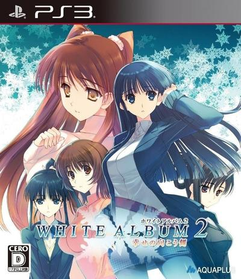
白色相簿2
WHITE ALBUM2 -introductory chapter- / -closing chapter-
R18 Lv.3：PC 版成人内容；PS3/PSV 版全年龄移植
三角恋 / 音乐 / 现实系恋爱 / 胃痛
门槛：高｜篇幅：60–100h
Summer Pockets REFLECTION BLUE
Summer Pockets REFLECTION BLUE
R18 Lv.1：全年龄/成熟标签；无 R18 主体
夏日岛屿 / 恋爱 / 泣系 / 奇迹
门槛：低中｜篇幅：40–70h
智代After
Tomoyo After ~It’s a Wonderful Life~
R18 Lv.2：Steam English Edition 全年龄；原始 PC 版有成人版本
后日谈 / 家庭 / 泣系 / 轻策略小游戏
门槛：中高｜篇幅：15–25h
LOOPERS
LOOPERS
R18 Lv.1：全年龄；轻度成熟内容
时间循环 / 宝藏猎人 / 短篇冒险
门槛：低｜篇幅：6–10h
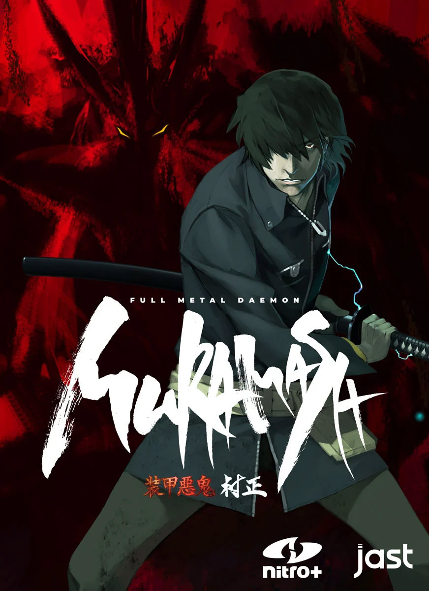
装甲恶鬼村正
Full Metal Daemon Muramasa / 装甲悪鬼村正
R18 Lv.4：R18 主体；Steam 不可售/被拒记录
暗黑武士 / 机甲 / 反英雄 / 哲学战斗
门槛：高｜篇幅：50–80h